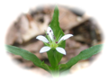

吾妻耶山〜大峰山
赤谷越〜吾妻耶山の稜線のシャクナゲが見頃という情報をネットで得て、出かけて来ました。今回はアプローチにJRを利用し、水上駅から吾妻耶山に登って、大峰山、大峰沼を経て上牧駅に下るコースを歩いて来ました。
桐生駅5:51発の両毛線に乗車し、新前橋駅6:28着。上越線水上行き列車への乗り継ぎはわずか5分の待ち合わせで便利。水上駅には7:26に到着する。
水上駅前から温泉街を抜けてR291を横断し、阿能川沿いの車道を赤谷越に向かって歩く。開けた谷をゆったりと流れる阿能川は、上越新幹線のシェルターを過ぎた少し先で急に深いゴルジュとなって、中に高さ約20mの稲荷滝を落としている。車道から階段を降りると朱塗りの欄干の橋があり、滝全体を眺めることができる。水量が多く、迫力ある滝だ。下流にも深い釜を持つ2段の滝が連続する。滝の上流は再びゆったりとした流れに戻る。


関越道の高架の下をくぐって、山間に入って行く。周囲の山の鮮やかな緑を眺めながら進めば、少々長い車道歩きも結構楽しい。カーブの連続を登って、仏岩トンネル手前のパーキングエリア（仏岩ポケットパーク）に到着する。WCや東屋があり、片隅には除雪で溜まった雪がわずかに消え残っていた。
東屋の奥から登山道に入り、杉とシダの林を登る。やがて雑木林になり、赤谷越に登り着く。峠を越える道は赤谷・高原千葉村に通じているようだ。阿能川岳に向かう稜線には踏み跡らしきものがあるが、どこまで続いているだろうか。


一休みして吾妻耶山に向かうと、すぐに仏岩の基部に着く。ザックを下ろして、仏岩に登ってみる。2段の細い鎖がかかっているが、その上は急峻なので、てっぺんまで登るのは止めておく。岩がボロボロで、崩落には注意。眼下の谷は新緑一色に染まって奇麗だ。吾妻耶山の頂上も見えるはずだが、今日はあいにく雲の中に隠れている。


尾根道を歩く
吾妻耶山への稜線歩きに戻る。仏岩で道草している間に6人パーティに追いつかれて、前後して登る。稜線にはミツバツツジやシャクナゲがたくさん咲いている。稜線上の難所を右から巻くと、山頂に向かって急登となる。シャクナゲはこの辺りが旬だ。花をつけた株は一部だが、咲いている所はかたまっているので、なかなか見事。


稜線からガレ沢（地滑りによる地割れ？）に入って少し登ると、頂上台地の一角に登り着く。台地の上はミズナラやカラマツの林で、地形図では平坦そうに見えるが、実際は小さな凹地（これも地滑りに起因？）があちこちにあって波打つような地形になっている。


台地に上がれば、吾妻耶山の頂上へは僅かな距離だ。頂上は岬の先端のような場所で、高さ2mほどの大きな石祠が3つ並んで鎮座している。徐々に晴れ間が広がって、眼下には水上の温泉街が見えるが、谷川連峰の方向はまだ雲の中だった。まあ、今回は展望がメインの山行ではないので、これだけ天気がもてば吉としよう。


頂上で缶ビールを飲んで、餅入りもつ煮で昼食にする。それにしてもブヨが多い。五剣谷岳のときよりもさらに凄い。虫除けを持って来るんだった。6人パーティや後続のパーティも上がって来て、頂上は賑やかになるが、皆さん一様に虫には閉口の模様。
虫に集られ、時々、もつ煮に飛び込む奴を箸でつまみ出しながら昼食を済ませ、頂上から稜線を伝って大峰山に向かう。途中、西峰にある三等三角点（1323m）にも立ち寄る。こちらの方は訪れる人も少ないようで、登山道から少し脇にそれた場所にある標石を見つけ出すのに、ちょっと探し回った。

天気が回復して日も射す中、吾妻耶山の南斜面を下る。林間にはヒゲネワチガイソウ（写真右）やシロバナエンレイソウがぽつぽつ咲いている。下りきった鞍部が赤谷越峠で、スキー場を経由する道が合流する。稜線通しに歩けばスキー場は見えないが、すいせん祭り開催中とのことで（5/25まで）、BGMがなにやら漏れ聞こえて来る。


赤谷越峠から樹林に覆われた縦走路をゆるゆると登る。途中で大峰沼への近道が左に分岐するが、危険のため通行禁止になっている。大きな電波塔を過ぎると車両も通れそうな幅広い道になって、電柱が立つ傍らに大峰山の二等三角点があった。予想しなかったそっけない山頂の様子にちょっとびっくり。
この先にも電波塔が間隔を置いて建ち並ぶ。途中に鉄製の2階建て展望台があるが、周囲の木々が育ってしまって、展望は全くない。右に車道を分け、電波塔の脇を通って稜線を直進すると、再び山道となる。ここからは新緑の中、ところどころミツバツツジが咲く気分の良い道だ。
緩く下って行くと、突然、尾根が切れ落ちたキレットになり、鉄製の階段で降りて、反対側を登る。登りの階段は数えたら95段もあって、息が切れた。このキレットは大峰沼から見ても判る不思議な地形だ。


稜線左側は新緑真っ盛りの樹林で、ところどころ木の間から大峰沼の水面が見える。緩く下ると大沼越に着き、瑞々しい緑の林間をさらに下って、大峰沼の湖畔に到着した。
大峰沼は樹林に囲まれ、水面に大峰山の緑を映してひっそりと佇んでいる。対岸には大峰キャンプ場の三角屋根の小屋が見える。沼を半周して小屋に向かう。周辺の林間にはバンガローが点在するが、今は使われているのだろうか。小屋の前にはベンチがあり、裏手にはWCもある。大峰沼にコロコロと響くカエルの声を聞いていると、ますます深い静寂を覚える。
湖畔には「大峰沼浮島湿原について」という石碑がある。それによると、群馬師範学校（現群馬大学）の堀正一先生が戦時中に学術調査を行って、泥炭層の厚さが8.6mであることを確認。さらにこの結果から、大峰沼湿原は日本の中部高地の湿原の中でも最も古い約1万年の歴史を持つことを明らかにしたそうだ。


大峰沼から上牧駅への下山道に入る。入り口にはヤマヒルに注意という掲示があった。まだヒルの季節には早いとは思うが、おっかなびっくりで歩く。この道は今でこそ歩く人が少ないようだが、かつてはメジャー？なハイキングコースだったようだ。途中に古色蒼然とした道標があった（下の写真）。後日、ネットで調べると、マツダランプというのは1962年頃まで使われた製品名（現在の東芝ランプ）だそうだ。道理で…。
杉林の中を緩く下って行き、山麓の眺めが良い伐採地を通る。整備された木道を下ると水分（みくまり）不動尊があり、傍らには沢から引いた水場がある。


水分不動尊のすぐ先で古い林道を横断し、山道をさらに下る。終始、緩い下り道でのんびりと歩ける。車道に出れば、小和知（こわち）の集落まではすぐだ。開けた緩い斜面に棚田が広がり、ちょうど田植えが行われていた。二階に手摺のある養蚕民家の面影を残しつつ改築したような民家が多い。利根川の向こうは三峰山を眺め、振り返れば傾いた三角形の山容の大峰山が見える。
長閑な農村風景を通り抜け、関越道をガードでくぐって、竹ノ上の集落に入る。R291を横断して直進し、突き当たりの林間の暗い細道（本当にこの道で良いのか、最初は迷った）を下る。利根川沿いの車道に出て上流に向かえば、すぐに利根川に架かる歩道橋があり、対岸に上牧風和の湯がある。


上牧風和の湯へ
下山のゴールが日帰り♨というところが、今回のコース取りのポイントだ(^^)。早速、温泉に入る。ここはスキー帰りに立ち寄ったことがある。そのときは賑わっていたが、今日は空いていてゆっくり湯船に浸かれた。帰りの列車の時刻を確認し、館内でポテトチップスと缶ビールを買って、風呂上がりの一杯。んー、山歩きと温泉の後のビールはやはり美味いな。


大峰山（左）と吾妻耶山
風和の湯から上牧駅までは約200mで、歩いて5分程度だ。無人駅の改札を通ってホームに上がると、今日歩いた吾妻耶山と大峰山のスカイラインが暮れ始めた西の空に浮かんでいた。上牧駅発16:53発の帰りの列車も新前橋での接続が良く、心地良い酔いで船を漕ぎつつ桐生に帰った。